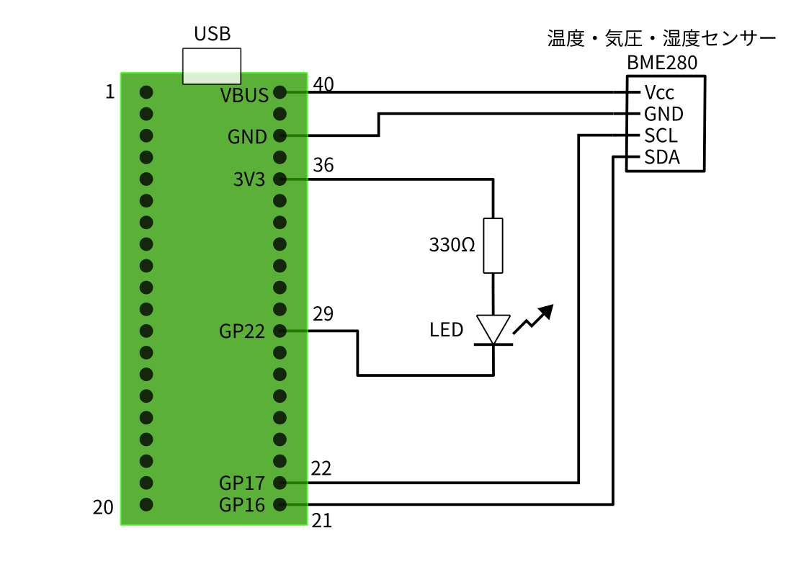
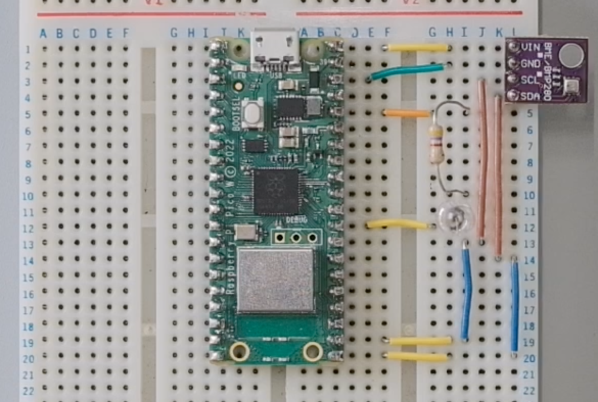
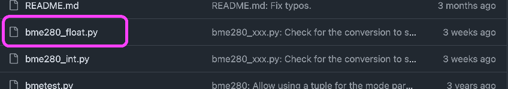
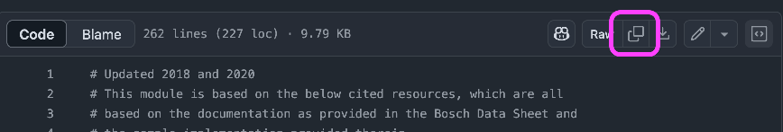
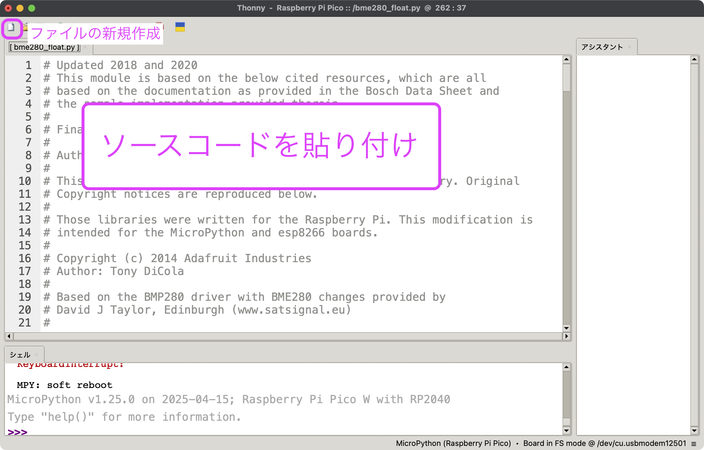
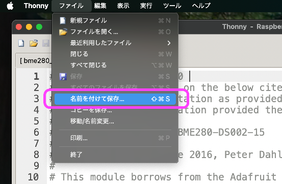
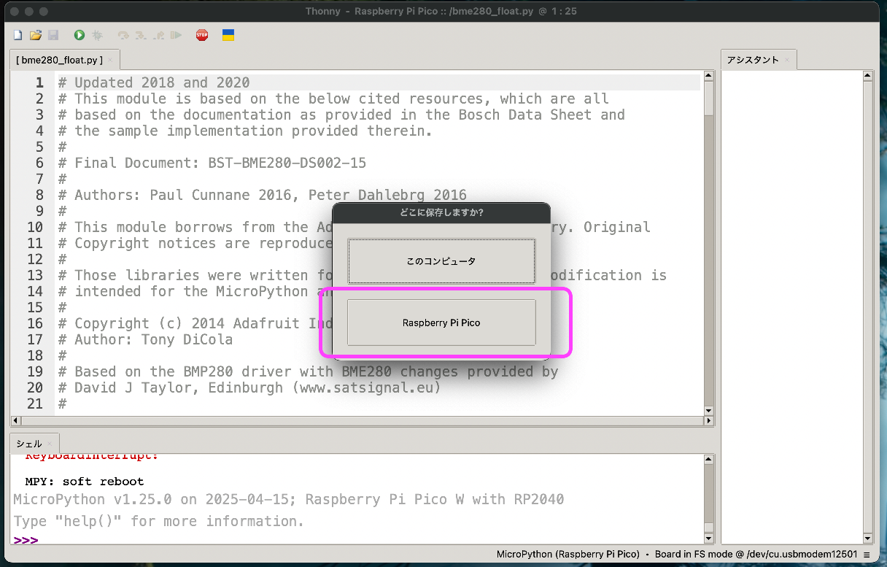
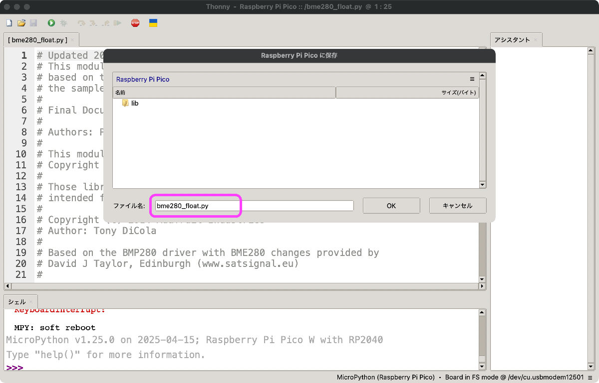

講義ノート1回目
大きな目標設定
- IoTの基礎をマイコンプログラミングを通して学ぶ
- Pythonの文法を知る
実験内容
- ブレッドボードで温度センサー計測回路を組み立てる
- 温度センサーをRaspberryPi Pico で読み取る
- センサー値をOLEDディスプレイで表示する
- 計測データをファイルに保存してPCでグラフにする
1. ブレッドボードで温度センサー計測回路を組み立てる
配線図

完成図

2. 温度センサーをRaspberryPi Pico で読み取る
センサー利用のためのPythonモジュールをセット
-
以下のURLにブラウザでアクセスする
GitHub - robert-hh/BME280: Micropython driver for the BME280 sensor -
今回使うモジュール名をクリックする
 -
モジュールのソースコードをコピーボタンでコピーする
 -
Thonnyで新しいファイルを作成し，先ほどコピーしたソースコードをペーストする
 -
ThonnyからPicoを認識させる
-
Picoに
bme280_float.pyという名前で保存する



センサーからデータ読み取り
- 以下のプログラムをThonny上に書き，Picoで実行する
from machine import I2C, Pin
import bme280_float as bme280
import time
i2c = I2C(0, scl=Pin(17), sda=Pin(16), freq=100000)
print(i2c.scan()) # [118] または [119] なら正常
bme = bme280.BME280(i2c=i2c)
led = Pin(22, Pin.OUT) # LEDについてはなくても問題ない
led.value(1) #
while True:
# 気温，気圧，湿度を読み取る
temp, pres, hum = bme.read_compensated_data()
print('気温: {:.2f}°C 気圧: {:.2f}hPa 湿度: {:.2f}%'.format(temp, pres / 100, hum))
# (オプション）気温が25度を超えたらLEDを点灯させる
if temp > 25.0:
led.value(0)
else:
led.value(1)
# 1秒間隔で計測を続ける
time.sleep(1)
- シェルに以下のような表示が出たら成功．LEDを繋いでいる場合，気温25度を超えると点灯する（点灯を判断する数値は適当を変えてよい）
3. センサー値をOLEDディスプレイで表示する
配線図

完成図

OLED表示付きプログラム
from machine import Pin, PWM, reset, time_pulse_us, I2C
import ssd1306
import time
import bme280_float as bme280
i2c_bme = I2C(0, scl=Pin(17), sda=Pin(16), freq=100000)
print(i2c_bme.scan()) # [118] または [119] なら正常
bme = bme280.BME280(i2c=i2c_bme)
led = Pin(22, Pin.OUT) # LEDについてはなくても問題ない
led.value(1) #
# --- ディスプレイの設定
i2c_oled = I2C(1, sda=Pin(14), scl=Pin(15))
try:
display = ssd1306.SSD1306_I2C(128, 64, i2c_oled)
except:
print("Display Error")
display.fill(0) # ディスプレイをクリア
display.text("Set up sensor", 0, 0)
display.show() # ディスプレイに表示
# --- 計測開始
while True:
# 気温，気圧，湿度を読み取る
temp, pres, hum = bme.read_compensated_data()
print('気温: {:.2f}°C 気圧: {:.2f}hPa 湿度: {:.2f}%'.format(temp, pres / 100, hum))
# (オプション）気温が25度を超えたらLEDを点灯させる
if temp > 25.0:
led.value(0)
else:
led.value(1)
display.fill(0) # ディスプレイをクリア
display.text("Temp: {:.1f} deg".format(float(temp)), 0, 0)
display.text("Pres: {:.1f} hPa".format(float(pres)/100), 0, 10)
display.text("Humi: {:.1f} %".format(float(hum)), 0, 20)
display.show() # ディスプレイに表示
# 1秒間隔で計測を続ける
time.sleep(1)